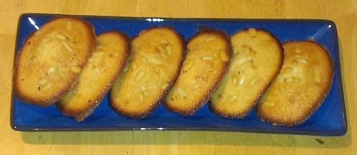

Madeleines
Ingredients for 16 madeleines:
- 120 grams of butter
- 120 grams of flour
- 120 grams of sugar
- 2 eggs
- 1 pinch of salt
- 1 teaspoon of yeast or 1/4 teaspoon baking powder
- (optional) 1 lemon zest or some vanilla extract
- (optional) pine nuts or raw sliced almonds
Tools:
Instructions:
- Prepare yeast according to instructions on package
- Pre-heat oven at 375°F
- Mix soft (but not melted) butter and sugar
- Add eggs and flour (using the sifter) and a pinch of salt
- Add the yeast or baking powder
- (optional) Add the lemon zest or vanilla extract
- Mix until the dough is homogeneous
- Put a little melted butter on the madeleines pan (to prevent sticking)
- Fill each slot on the madeleines pan w/ dough
- (optional) Add sliced almonds or pine nuts on top
- Put in the oven for 10 to 15 minutes (until golden)
- Get the madeleines tray out of the oven, and the madelines out of the tray, and let cool down
Notes: best on the day they are baked, but can be kept for a week in a container.
